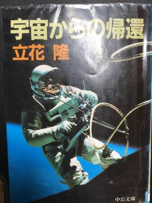

うるがいの話 ある日
最新: １号線うるがいとは 前提知識です
カニの画像をクリックすると『うるがいの話』サイトを表示します|
|
【うるがいの話】 うるがい(ｳﾙｶﾞｲ urugai)とは、『もずくがに』の名前でとても大きくなります。 |
|---|---|
|
|
【Got cat カミマヤーの話】 たながー（ﾀﾅｶﾞｰtanagaa）とは手長えびのことで、何種類かあり大きいのは車 エビぐらいになります。 |

|
【ぶながぁの話】 ぶながー(bunagaa)とは、赤い髪の毛、赤い身体、そして身長は１ｍ２０ｃｍ ぐらい、川の蟹を食べているの目撃された。場所は沖縄県国頭郡大宜味村のと ある村僕の隣近所に住んでいる爺さんから、聞いた話です。 |
|
|
【ギーマの話】 ギーマ(giima)とは、山原の里山に咲くスズランに似た、 花を付けます。実は食べられます、 気が付くと口の周りが紫になっています。 |
2021年10月04日 (月）１号線
10:04

国頭街道→那覇名護線（県道）→１号線（政府道）→５８号線（国道）と変遷
（レファレンス協同データベースより引用）。おそらく私が小学生の頃、１号
線は村の中を通っており、同級生がバス（当時は女性の車掌さんがいた）にひ
かれた事故（軽傷）もあった。いまの５８号線は浜で、あだんが浜沿いにあっ
た。暫くすると一号線は、今の海岸に沿うよう工事が始まる。家の近くにあっ
た５班の場所（うちは６班だった）に食堂があり、その隣にあだんが、沢山生
えていた。あだんの棘のある葉から、棘の箇所を切り取り「かざぐるま、時計
、わっか」など作って遊んだ。・・何もなかった時代である。ということをこ
の前、居酒屋『あだん』の提灯をみて思いだしのである。そこの主人もしくは
関係者もあだんに思い入れがあるのだろうと。図書館が再開した、金曜日まで
に借りた本を返さないといけない。急いで借りた本を読んでいる（音楽ソフト
にはまって読む時間が無かった）。立花隆は、今年４月に亡くなられた。中国
が火星探査を６月に成功している。さらに、中国宇宙ステーションに３か月間
にわたる長期滞在ミッションから今月帰還した。帰還した人達はどう感じたの
だろう。彼らは地球人として認識したのかな、いずれにしろ、技術力は断トツ
になっている。３７年前に出版した本を読んでコズミックフアンの私は考える
のである。
「宇宙から見る地球はほんとに美しい。宇宙飛行士がみないうことだが、ほんとに美しい。
しかし同時に、それが汚されつつあるというのもほんとなのだ。いまはランドサット衛星などが、
赤外線写真など、さまざまの特殊写真技術によって、公害の進行ぶりを解析しているが、
あのころはそんなものはなかった。しかし、そんなものなしでも、人間の肉眼でそれがわかるのだ。
特に私の場合は、六二年、六五年、六八年と、六年間に三回宇宙から地球の姿を見てきた。
だから、その変化がわかる。特に大気汚染、水汚染の状況がわかる。ロスアンゼルスのスモッグ、
デンバーのスモッグ、東京のスモッグなど、世界的に有名な大気汚染は 肉眼で観察できた。
それは実に悲しい眺めだ。地球全体が美しすぎるほど美しいだけに、
そういうシミのような部分の存在を目にすると、ほんとに悲しくなる。
特に悲しかったのは上海だ。六二年の上海は京都のように美しい街だった。
しかし、六五年、六八年と目に見えて空気が悪くなり、ついには、
有名大気汚染地域と変らないようにな ってしまった。そういう状況を見て、地球に戻ってくると、
これからうと、ほんとに心配になってきた。
我々はこの地球にいったい何ということをしていると怒りの思いがこみあげてきた。
宇宙を飛ぶ前は、環境問題などにはまるきり関心がなかったが、地球に戻ってからは、
NASAを引退したら環境問題に取り組もうと決心していた。」
・・この後、第三章 宇宙体験における神の存在認識・・
あとがきから
私が生きている間に、ジャーナリストに宇宙飛行のチャンスが与えられるかもしれない。あるいは、金さえ出せば(もちろんきわめて巨額なものであろうが)、誰でも宇宙飛行ができるようになるかもしれない。年齢はあまり問題ではない。すでに五十代の宇宙飛行士が飛んだのだし、おっと年をとっても、健康でありさえすれば、宇宙飛行士でなくお客さんとして飛ぶぶんにはいっこうにさしつかえないだろうという。それにしても、私はすでに四十歳な越えてしまった。宇宙飛行に要求される健康なあと二十年保てるかどうか。その間に私に 本チャンスがいるかどうか。可能性はほとんどあるまいと思いつつも、望みは捨てないで待ってみるつもりだ。
1985年7月10日初版 立花 隆の宇宙からの帰還より